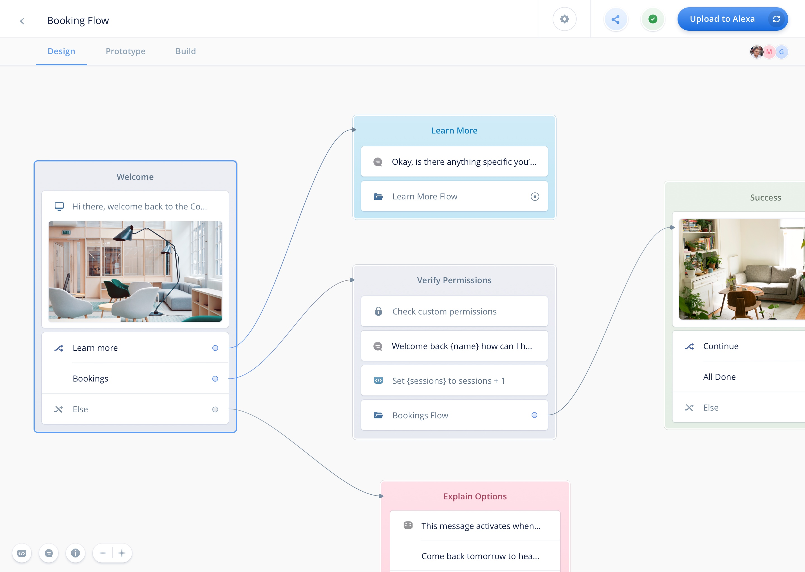
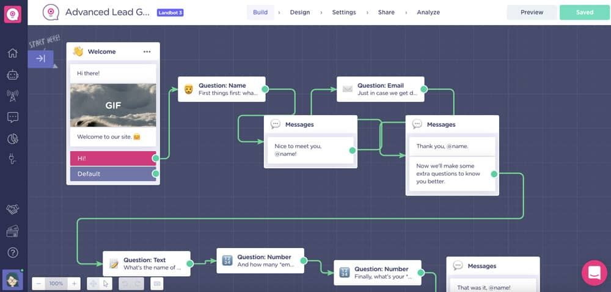

In the ever-evolving landscape of conversational AI and its applications, it’s crucial to understand the various tools available to craft compelling conversational experiences. If you’re new in this field and want to design your first conversations, you might want to try some of the most popular conversation design software. In this blog post, I review Voiceflow and Landbot, which are widely used and which offer free plans for beginners.
Voiceflow is a software used both for prototyping and for designing conversations. It also allows you to launch your chatbot on Google Assistant or on Amazon Alexa (although launching your chatbot is not recommended unless you have a lot of programming experience). The good thing about Voiceflow is that it’s considered an industry standard, so if you’re just starting out in conversation design, it’s great to learn how to use it.
Voiceflow is very intuitive. Once you start a new project, you see a canvas where you can drag and drop blocks that have different functions. To create a conversational flow, you simply have to connect the blocks using arrows. You can further customize your flow by adding slots (aka. entities), keywords, and sample utterances. Once you’re done with your prototype, Voiceflow also allows you to test it.

Another good thing about Voiceflow is that it’s a collaborative tool, meaning that you can have more than one person working on a project (similar to a Google doc, to give you an idea). On the other hand, Voiceflow doesn’t offer analytics, since it’s mostly a prototyping tool. Likewise, integrations are limited, although you can include simple things like webhooks, for example.
Regarding its free plan, you can have 1 workspace and up to 2 conversational assistants as well as unlimited viewers. If you need more than that, you would have to get the Pro plan, which is about $40/month per editor.
Landbot is a software similar to Voiceflow in that it’s intuitive and works by adding blocks with different functions to a canvas. Landbot allows you to launch your chatbot on different platforms, including Facebook Messenger, Slack, and WhatsApp. However, unlike Voiceflow, you can’t use Landbot to collaborate with other people.

Landbot has an analytics tab where you can find several metrics to see how your chatbot is doing. Although the metrics are quite simple, they can be very helpful. For example, you can see the number of users who started and completed a conversation with your chatbot. You can also see some visualizations, and even filter your data to find out more about user patterns.
If you’re on the free plan, you can only build chatbots for websites. Nevertheless, with Landbot, you can create unlimited chatbots on the free plan. What is limited is the number of chats that users can have with your chatbots (only 100 chats a month). If you want to upgrade to a paid plan to enjoy more features, the cheapest plan starts at $39/month.
When it comes to conversation design, both Voiceflow and Landbot offer compelling options, each with its own strengths and limitations in their free versions. Voiceflow excels in prototyping, while Landbot focuses on website and messaging integrations. Depending on your specific requirements and project scope, one of these tools might be the perfect fit for your conversational design needs. Experiment, explore, and choose the platform that aligns best with your goals to create engaging conversational experiences for your audience. Or try both if you have the time. Happy designing!